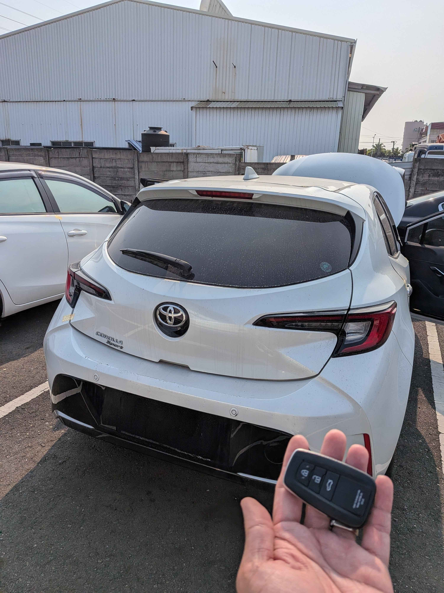

現場實拍：林口大型拍賣場 2023 Toyota Auris 智慧鑰匙全丟現場匹配
林口大型車輛拍賣中心：2023 年式新車現地重啟
近日接獲一位在林口地區大型競拍場得標 2023 年式 Toyota Auris (Corolla Sport) 的車主求助。此類年份較新的車款車輛安全等級極高，且在拍場環境下往往無法長時間等待原廠叫貨。極致核心技師獲報後，立即攜帶專業豐原/林口行動站設備直奔現場。
技術核心：車輛端資料確認 安全設定破解與數據寫入
針對 Toyota 最新一代車輛安全系統，技師執行以下精密流程：
- • 低干預車輛系統： 全程透過 車輛端資料確認 診斷介面進行數據交換，不拆卸車內任何飾板或電腦。
- • 高效匹配： 現場 45 分鐘內完成兩把全新智慧感應鑰匙的寫入。
- • 拍場救援： 克服拍場場地限制，在車位現場即完成所有配製，讓車主當場領車駛離。
得標車主無需支付昂貴的拖吊費用與長達數週的零件等待期。極致核心的高效率服務，確保得標車主在第一時間就能享受新車。